pacman::p_load(spdep, tmap, sf, ClustGeo,
ggpubr, cluster, factoextra, NbClust,
heatmaply, corrplot, psych, tidyverse, GGally)Hands-on Exericse 9: [Cont. from Hands-on 7] SKATER approach
Last time on Hands-on Exercise 7…
Analytical Question
In geobusiness and spatial policy, it is a common practice to delineate the market or planning area into homogeneous regions by using multivariate data.
planning and implementing targeted policies will be easier
reduce data complexity, enabling easier analysis
ensure equitable distribution of resources to each homogeneous region
Packages
Spatial data handling
- sf, rgdal and spdep
Attribute data handling
- tidyverse, especially readr, ggplot2 and dplyr
Choropleth mapping
- tmap
Multivariate data visualisation and analysis
- coorplot, ggpubr, and heatmaply
Cluster analysis
cluster
ClustGeo
Data
Two data sets will be used in this study. They are:
Myanmar Township Boundary Data (i.e. myanmar_township_boundaries) : This is a GIS data in ESRI shapefile format. It consists of township boundary information of Myanmar. The spatial data are captured in polygon features.
Shan-ICT.csv: This is an extract of The 2014 Myanmar Population and Housing Census Myanmar at the township level.
Both data sets are download from Myanmar Information Management Unit (MIMU)
shan_sf <- read_rds('data/rds/shan_sf.rds')
shan_ict <- read_rds('data/rds/shan_ict.rds')
shan_sf_cluster <- read_rds('../ex7/data/rds/shan_sf_cluster.rds')SKATER Approach
To derive spatially constrained cluster
Overall
Compute Neighbors list
SKATER function only support sp objects such as SpatialPolygonDataFrame
shan_sp <- as_Spatial(shan_sf)Compute neighbours list from polygon list
# poly2nd() of spdep
shan.nb <- poly2nb(shan_sp)
summary(shan.nb)Neighbour list object:
Number of regions: 55
Number of nonzero links: 264
Percentage nonzero weights: 8.727273
Average number of links: 4.8
Link number distribution:
2 3 4 5 6 7 8 9
5 9 7 21 4 3 5 1
5 least connected regions:
3 5 7 9 47 with 2 links
1 most connected region:
8 with 9 linksApply coordinates to original shan_sf to extract polygons’ centroids, which are used as the nodes for the future plot
coords <- st_coordinates(st_centroid(st_geometry(shan_sf)))Plot shan.nb on top of shan_sf
shan_sfextends further than the graph, so its plotted first, otherwise some of the areas will be clipped, because plotting area is determined by the characteristics of the first plot
Code
plot(st_geometry(shan_sf), border=grey(.5))
plot(shan.nb,
coords,
col="blue",
add=TRUE) # adds to existing plot, otherwise will be plotted separately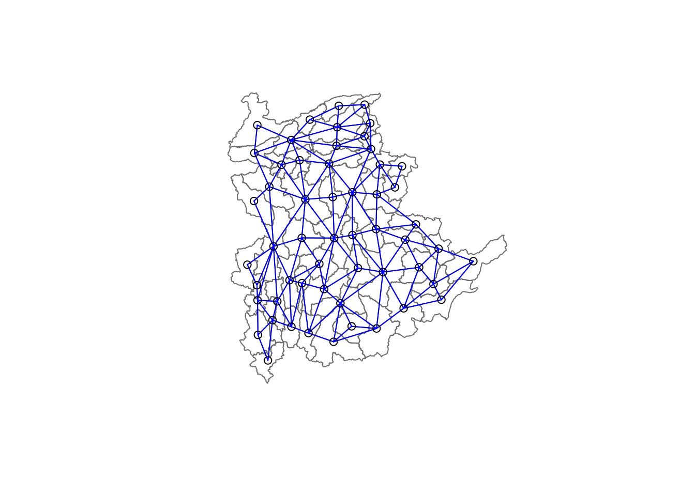
Computing minimum spanning tree
Compute edge costs
edge costs: distance between nodes
# nbcosts() of spdep package
lcosts <- nbcosts(shan.nb, shan_ict)Gives pairwise dissimilarity between its values on the five variables and the values for the neighbouring observation (from the neighbour list). Basically, this is the notion of a generalised weight for a spatial weights matrix.
Convert shan.nb to a list weights object by specifying lcosts as the weights
# nb2listw() of spdep package
shan.w <- nb2listw(
shan.nb,
lcosts,
style = 'B' # ensures cost values arent row-standardised
)
summary(shan.w)Characteristics of weights list object:
Neighbour list object:
Number of regions: 55
Number of nonzero links: 264
Percentage nonzero weights: 8.727273
Average number of links: 4.8
Link number distribution:
2 3 4 5 6 7 8 9
5 9 7 21 4 3 5 1
5 least connected regions:
3 5 7 9 47 with 2 links
1 most connected region:
8 with 9 links
Weights style: B
Weights constants summary:
n nn S0 S1 S2
B 55 3025 76267.65 58260785 522016004Compute the tree using shan.w
# mstree() of spdep package
shan.mst <- mstree(shan.w)Check its class and dimension
class(shan.mst)[1] "mst" "matrix"dim(shan.mst)[1] 54 3Note how n (number of dimensions) in
shan.wis 55 butdim(shan.mst) = 54, becauseshan.mstconsists on n-1 edges (links) in order to traverse all the nodes
Plot shan.mst
Code
plot(st_geometry(shan_sf), border = gray(.5))
plot(
shan.mst,
coords,
cex.labels = .7,
cex.circles = .005,
add = TRUE
)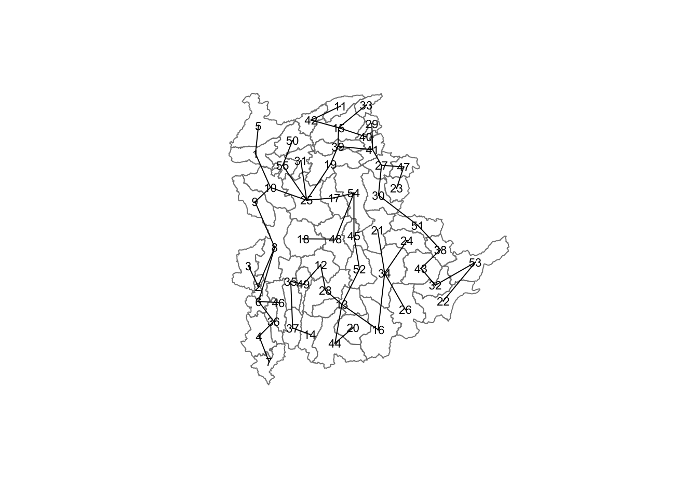
Compute the spatially constrained cluster
# skater() of spdep package.
clust6 <- skater(
edges = shan.mst[,1:2], # exclude the 3rd col (cost)
data = shan_ict,
method = 'euclidean',
ncuts = 5 # one less than number of clusters
)
clust6is objectskater
str(clust6)List of 8
$ groups : num [1:55] 3 3 6 3 3 3 3 3 3 3 ...
$ edges.groups:List of 6
..$ :List of 3
.. ..$ node: num [1:18] 47 27 22 43 42 15 41 38 32 53 ...
.. ..$ edge: num [1:17, 1:3] 22 15 42 43 41 38 15 27 15 32 ...
.. ..$ ssw : num 3759
..$ :List of 3
.. ..$ node: num [1:22] 13 48 54 55 45 37 34 16 25 52 ...
.. ..$ edge: num [1:21, 1:3] 48 55 54 37 34 16 45 25 13 13 ...
.. ..$ ssw : num 3423
..$ :List of 3
.. ..$ node: num [1:11] 2 6 8 1 36 4 10 9 46 5 ...
.. ..$ edge: num [1:10, 1:3] 6 1 8 36 4 6 8 10 10 9 ...
.. ..$ ssw : num 1458
..$ :List of 3
.. ..$ node: num [1:2] 44 20
.. ..$ edge: num [1, 1:3] 44 20 95
.. ..$ ssw : num 95
..$ :List of 3
.. ..$ node: num 23
.. ..$ edge: num[0 , 1:3]
.. ..$ ssw : num 0
..$ :List of 3
.. ..$ node: num 3
.. ..$ edge: num[0 , 1:3]
.. ..$ ssw : num 0
$ not.prune : NULL
$ candidates : int [1:6] 1 2 3 4 5 6
$ ssto : num 12613
$ ssw : num [1:6] 12613 10977 9962 9540 9123 ...
$ crit : num [1:2] 1 Inf
$ vec.crit : num [1:55] 1 1 1 1 1 1 1 1 1 1 ...
- attr(*, "class")= chr "skater"ccs6 <- clust6$groups
table(ccs6)ccs6
1 2 3 4 5 6
18 22 11 2 1 1 groups: shows number of observations in each cluster
Plot pruned tree with 5 clusters
Code
plot(st_geometry(shan_sf),
border=gray(.5))
plot(
clust6,
coords,
cex.labels = .7 ,
groups.colors=c("red","green","blue", "brown", "pink"),
cex.circles=0.005,
add=TRUE
)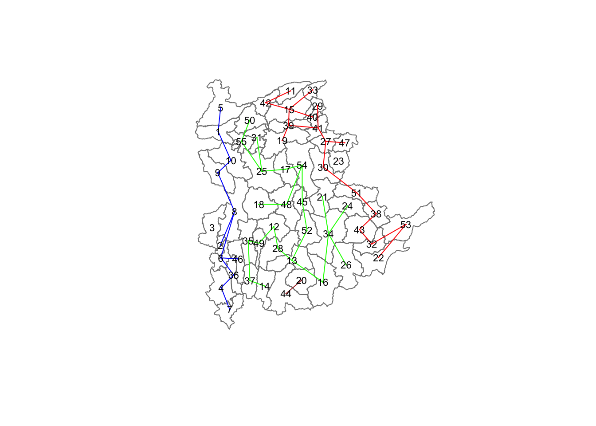
Visualising the clusters in choropleth map
# compute proximity matrix
proxmat <- dist(shan_ict, method = 'euclidean')
# agglomeration method (ward.D) to compute the hierachical cluster
hclust_ward <- hclust(proxmat, method = 'ward.D')
# retain 6 clusters
groups <- as.factor(cutree(hclust_ward, k=6))
shan_sf_cluster <- cbind( # append groups onto shan_sf to produce an output sf object
shan_sf,
as.matrix(groups)) %>% # convert 'list' object group into a matrix
rename(`CLUSTER`=`as.matrix.groups.`)Code
groups_mat <- as.matrix(clust6$groups)
shan_sf_spatialcluster <- cbind(shan_sf_cluster, as.factor(groups_mat)) %>%
rename(`SP_CLUSTER`=`as.factor.groups_mat.`)
qtm(shan_sf_spatialcluster, "SP_CLUSTER")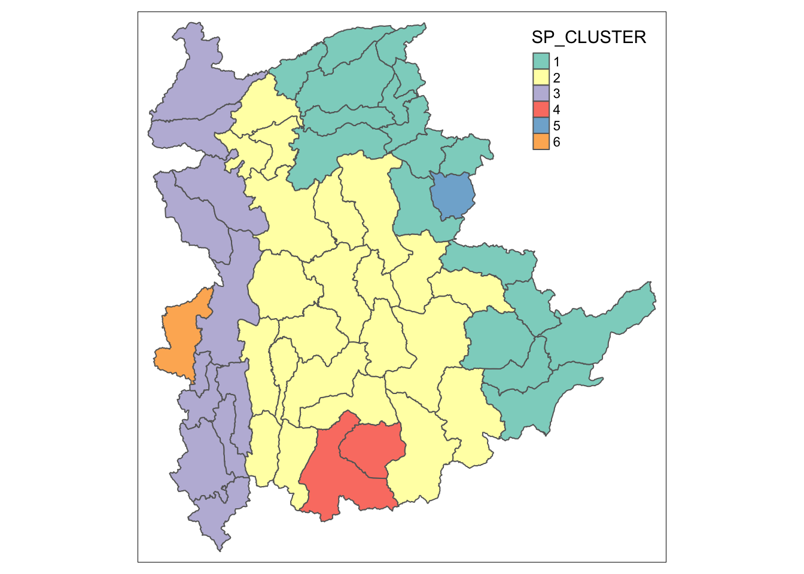
Code
hclust.map <- qtm(shan_sf_cluster,
"CLUSTER") +
tm_borders(alpha = 0.5)
shclust.map <- qtm(shan_sf_spatialcluster,
"SP_CLUSTER") +
tm_borders(alpha = 0.5)
tmap_arrange(hclust.map, shclust.map,
asp=NA, ncol=2)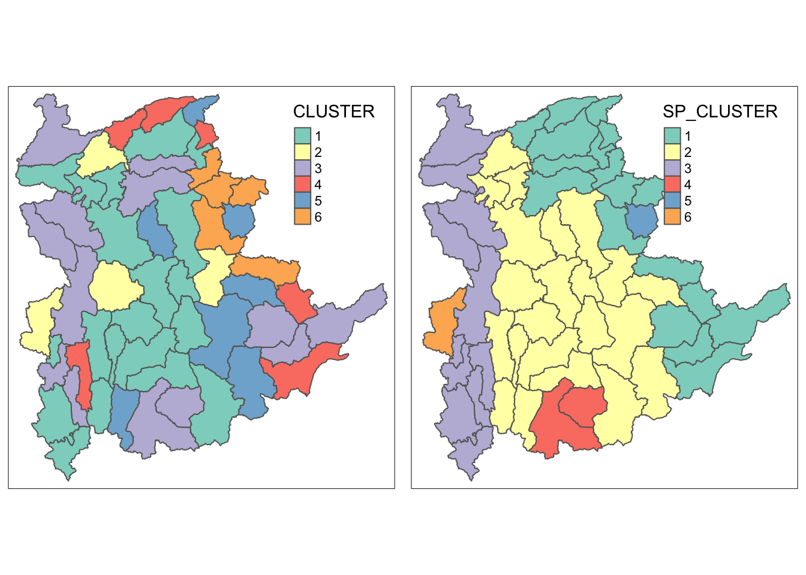
ClustGeo package
To perform non-spatially constrained hierarchical cluster analysis and spatially constrained cluster analysis
Overall
Ward-like hierarchical clustering
Code
# hclustgeo() to perform a typical Ward-like hierarchical clustering
nongeo_cluster <- hclustgeo(proxmat)
plot(
nongeo_cluster,
cex = .5
)
rect.hclust(
nongeo_cluster,
k = 6,
border = 2:5
)
Form clusters
Code
groups <- as.factor(cutree(nongeo_cluster, k=6))
shan_sf_ngeo_cluster <- cbind(shan_sf, as.matrix(groups)) %>%
rename(`CLUSTER` = `as.matrix.groups.`)
qtm(shan_sf_ngeo_cluster, "CLUSTER")
Derive Spatial Distance Matrix
dist = st_distance(shan_sf, shan_sf)
distmat <- as.dist(dist) # convert df to matrixchoicealpha() will be used to determine a suitable value for the mixing parameter alpha
Code
# determine a suitable value for the mixing paramete
cr <- choicealpha(
proxmat,
distmat,
range.alpha = seq(0, 1, 0.1), # start, stop, step
K=6,
graph = TRUE)

Use alpha = 0.2
Code
# perform a typical Ward-like hierarchical clustering
clustG <- hclustgeo(
proxmat,
distmat,
alpha = 0.2
)
# derive cluster object
groups <- as.factor(cutree(clustG, k=6))
# join ClusterGeo groups list of formed clusters with shan_sf
shan_sf_Gcluster <- cbind(
shan_sf,
as.matrix(groups)) %>%
rename(`CLUSTER` = `as.matrix.groups.`)
# plot newly delineated spatially constrained clusters
qtm(shan_sf_Gcluster, "CLUSTER")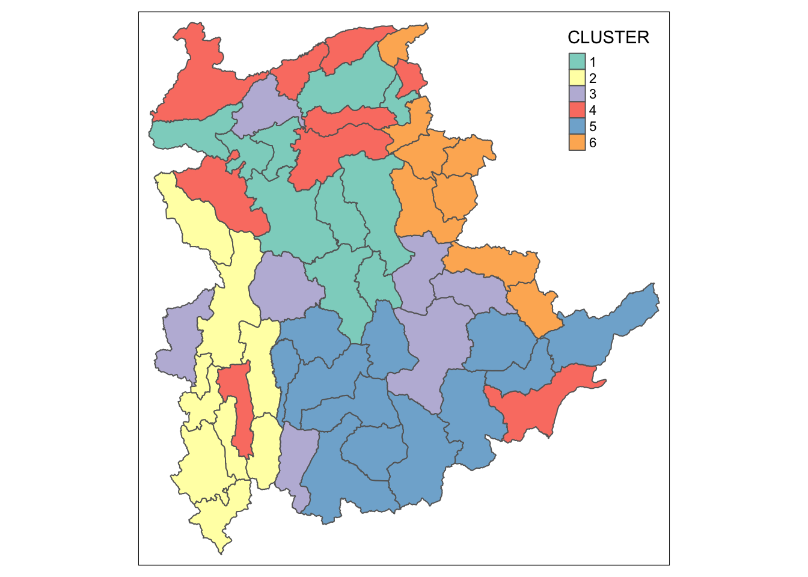
Visual Interpretation of Clusters
Univariate
Compute boxplots
colnames(shan_sf_ngeo_cluster) [1] "ST" "ST_PCODE" "DT.x" "DT_PCODE.x"
[5] "TS.x" "TS_PCODE" "DT_PCODE.y" "DT.y"
[9] "TS.y" "TT_HOUSEHOLDS" "RADIO" "TV"
[13] "LLPHONE" "MPHONE" "COMPUTER" "INTERNET"
[17] "RADIO_PR" "TV_PR" "LLPHONE_PR" "MPHONE_PR"
[21] "COMPUTER_PR" "INTERNET_PR" "CLUSTER" "geometry" Code
ggplot(
data = shan_sf_ngeo_cluster,
aes(x = CLUSTER, y = RADIO_PR)) +
geom_boxplot()
ggplot(
data = shan_sf_ngeo_cluster,
aes(x = CLUSTER, y = LLPHONE_PR)) +
geom_boxplot()
ggplot(
data = shan_sf_ngeo_cluster,
aes(x = CLUSTER, y = MPHONE_PR)) +
geom_boxplot()
ggplot(
data = shan_sf_ngeo_cluster,
aes(x = CLUSTER, y = COMPUTER_PR)) +
geom_boxplot()
ggplot(
data = shan_sf_ngeo_cluster,
aes(x = CLUSTER, y = INTERNET_PR)) +
geom_boxplot()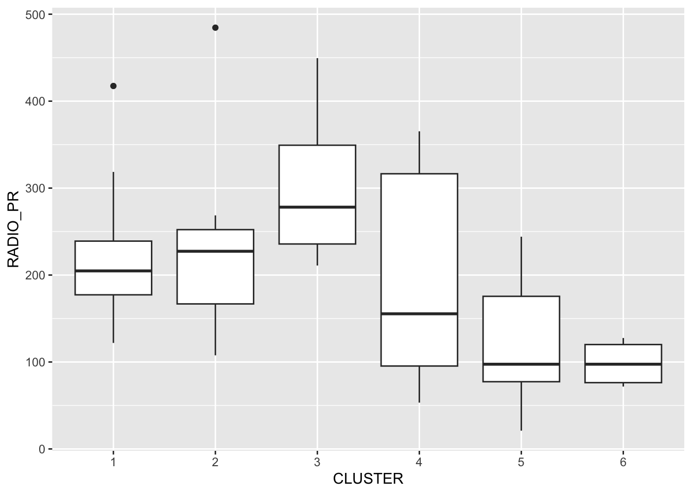
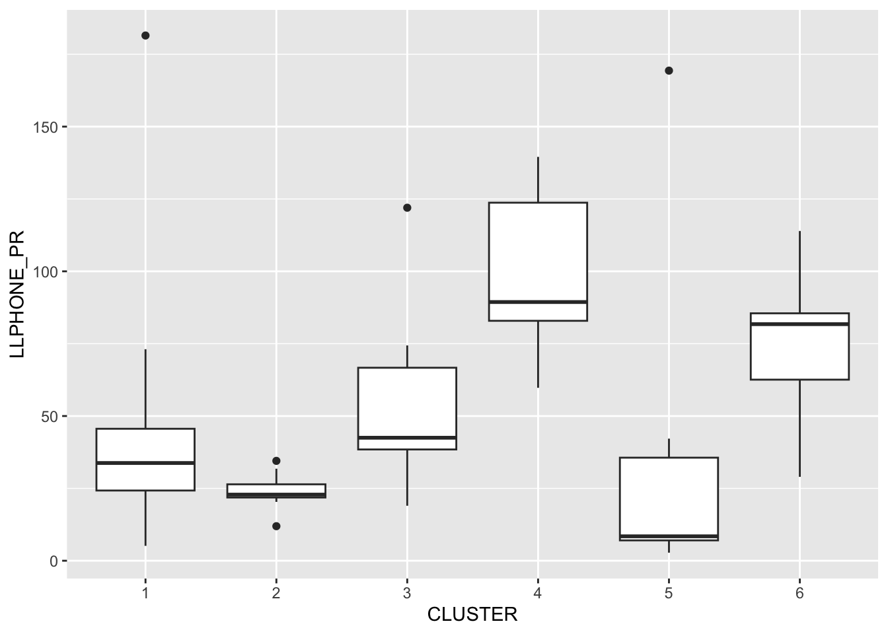
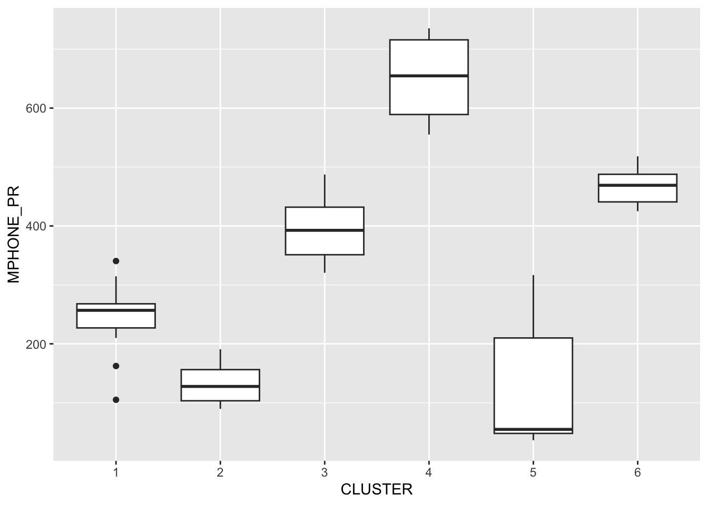
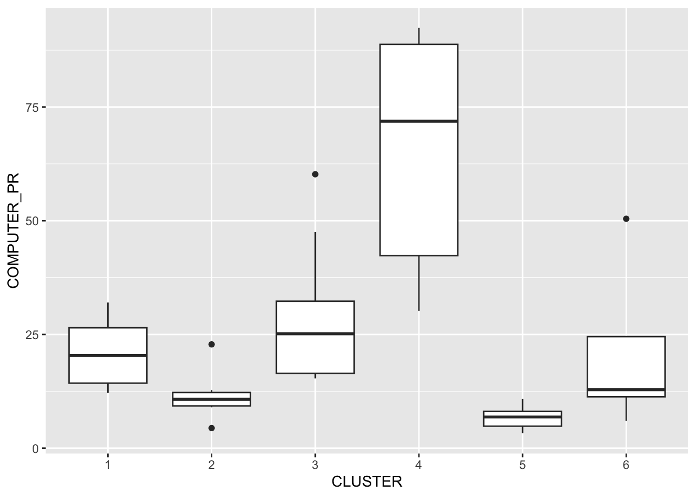
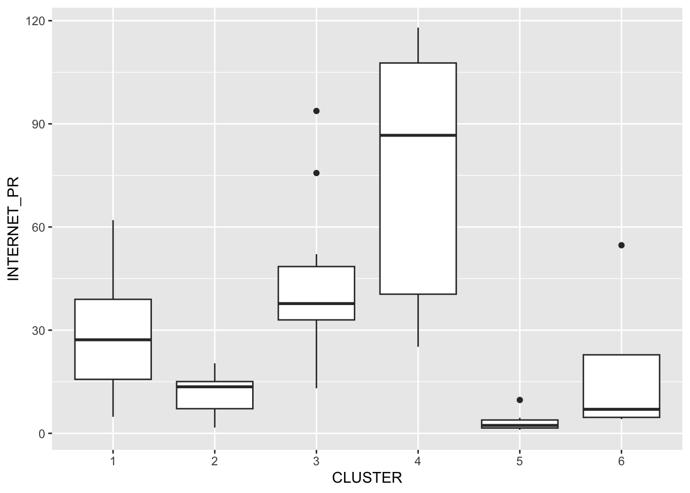
Multivariate
Parallel coordinate plot:
Code
ggparcoord(
data = shan_sf_ngeo_cluster,
columns = c(17:21),
scale = 'globalminmax', # no scaling, determined by global data range
alphaLines = .2,
boxplot = TRUE, # boxplot overlay
title = "Multiple Parallel Coordinates Plots of ICT Variables by Cluster") +
facet_grid(~ CLUSTER) +
theme(axis.text.x = element_text(angle = 30)
)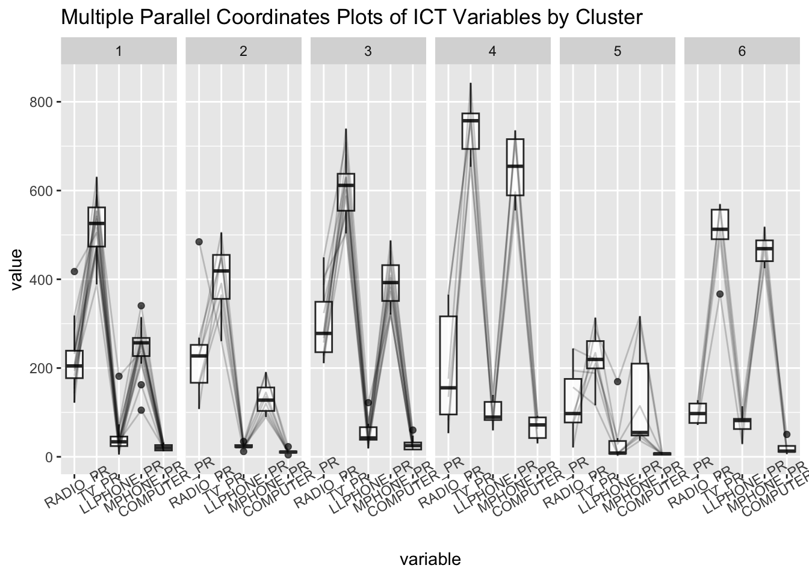
Reveals that households in Cluster 4 townships tend to own the highest number of TV and mobile-phone. On the other hand, households in Cluster 5 tends to own the lowest of all the five ICT
Also note
scalehave other scaling methods, explore and select the optimal.
Compute the summary statistics
Code
shan_sf_ngeo_cluster %>%
st_set_geometry(NULL) %>%
group_by(CLUSTER) %>%
summarise(mean_RADIO_PR = mean(RADIO_PR),
mean_TV_PR = mean(TV_PR),
mean_LLPHONE_PR = mean(LLPHONE_PR),
mean_MPHONE_PR = mean(MPHONE_PR),
mean_COMPUTER_PR = mean(COMPUTER_PR))# A tibble: 6 × 6
CLUSTER mean_RADIO_PR mean_TV_PR mean_LLPHONE_PR mean_MPHONE_PR
<chr> <dbl> <dbl> <dbl> <dbl>
1 1 221. 521. 44.2 246.
2 2 237. 402. 23.9 134.
3 3 300. 611. 52.2 392.
4 4 196. 744. 99.0 651.
5 5 124. 224. 38.0 132.
6 6 98.6 499. 74.5 468.
# ℹ 1 more variable: mean_COMPUTER_PR <dbl>